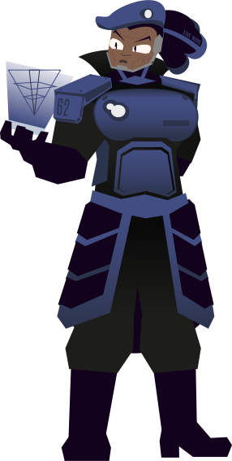

Quais as tecnologias as recentes tecnologias de Karsater?

Notícias!
Fique por dentro dos principais acontecimentos de Kersater!
Purah Richer visita OMS
no dia: [dataMissing!], CEO e Cientista: Purah Richer Karsater foi para a Suiça visitar a Organização Mundial da Saúde mostrar nossos novos produtos com a Biocomposto NB-F. Garantindo que mais tenham acesso aos novos produtos Karsater
No dia [dataMissing!] a fundadora e a mente unificada de Karsater: PUrah Richer Karsater foi para a Suiça visitar a Organização Mundial da Saúde demonstrar o biocomposto NB-F no robô: Biscoito, que foi pensado para o cuidado de crianças e serviços manuais. Karsater por anos esteve sobre o olhar vigiado da OMS pela natureza do Biocomposto e suas capacidades, ainda sim, Karsater sempre consegue provar seu controle sobre o Biocomposto com facilidade!
Operação de Manto Azul em Paris
O Manto Azul, principal esforço armado feito para conter Raves fugitivos agil recentemente nos córregos de Paris para impedir um possível ataque organizado das criaturas, com sucesso!
Um cliente sangrou em um de nossos robôs, o que trouxe um Rave para o ataque e assimilação da vizinhança. O Manto Azul foi ativado horas após o reconhecimento do Rave. Em dois dias, a ameaça Rave foi parada com sucesso.
Descoberta importantes sobre Raves!
O evento "Rave" é o contato do sangue com o Biocomposto NB-F, o que faz o composto biológico volátil e violento. Mas assim como os Flocos, Raves podem ter sua própria iteligência e personalidade. Ainda sim, testes estão sendo conduzidos.
Por anos uma das principais preocauções com a interação do Biocomposto NB-F foi o do sangue, no contato com o sangue, o composto toma uma coloração laranja e fica com sinapses relacionada a raiva e vingança. Mas o que parecia apenas uma corrupção está se revelando cada vez mais como uma alternativa. Ainda sim, é não encorajamos nossos clientes a interagir com sangue perto de nossos produtos!
Mais um posto de Karsater criado na Africa do Sul!
Por anos estivemos expandindo nossos esforços para trazer os principais produtos e tecnologias para todo o mundo e o novo posto na Africa do Sul marca uma importatne conquista em nesse plano de unir todos em uma só mente!
O posto em [missingData!] na Africa do Sul mostra a conquista em trazer nossa empresa, produtos e serviços para todos os continentes do planeta! Nós nos esforçamos para alcançar o máximo de pessoas o possível, sem excessões! Nosso objetivo é que em alguns anos, todos tenham acesso ao menos a um produto de Karsater!
Os primeiros testes com robôs de defesa cívil estão sendo feitos!
Acreditamos que a melhor forma de manter a segurança cívil é por meio da automatização! Por isso, começando em 2019, nossos robôs estão passando por testes para defesa cívil, para que no futuro possam substituir a polícia.
Desde 2018 estamos planejando o uso de nossos robôs como alternativa para a defesa cívil. Consideramos sua obediência e resiliência como ideiais para manter a ordem e segurança para todos em um ambiente dinâmico como a de uma cidade. Pranejamos que até 2026 teremos os primeiros robôs de defesa cívil em Londres, Alemanha, Paris e Portugal
{Nota do Manto Azul: <!-- para quem estiver colocando referências de sobre Good Girl no site, pare imediatamente! Haverá punições para atitudes de insegurança contra o público! Se for Good Girl fazendo isso, volte para Contenção!-->}
✔ Sua candidatura foi enviada!
Agradecemos seu interesse em trabalhar na KARSATER. Se você for compatível nós saberemos!